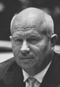

1950.html
Soviet Union from 1950- 1960
Although it was not the most interesting period in Soviet history, some significant events took place during this time period. Stalin's death shook the nation in 1953. He built such a strong personal cult that people felt Stalin was invulnerable to death. Grief over his death was shared in homes and on the streets in Soviet Union. There was a sense of uncertainty where Soviet Union will go after his death.

Khrushchev's rise to powerSoon power struggle took place among Soviet leaders, in which people had little participation. Malenkov, Beria, and Khrushchev were the main contenders for the position of the head of state and party. Malenkov and Khrushchev colloborated to remove Beria, who was a threat to all. Malenkov, became the Chairman of the Council of Ministers. Khrushchev became the General Secretary of Party. In 1955 he removed Malenkov from the premiership in favour of his handpicked nominee, Marshal Nikolay A. Bulganin. In 56 Khrushchev gave his famous speach on the "cult of the individual and its consequences",denouncing Stalin in closed session of 20th Party Congress.
The Virgin Land Program(54-56)
Khrushchev's ability to solve the problem of Soviet Agriculture through the program was an important factor in his rise to and consolidation of power. To increase the harvest of wheat, he decided to cultivate the virgin rich soiled land in northern Kazakstan, Southern Siberia. Kazak leadership resisted. But their resistence was soon put down by Brezhnev who was sent there by Khrushchev. After drought in 55, Soviet Union's harvest increased almost twofold.
Additional information on Kazakstan.
Thaw
The cultural "Thaw" that set in under Khrushchev transformed the intellectual environment. It started with the publication of Ilya Erinburg's novel "Thaw" which critized the Stalin era. Khrushchev's cultural policy was thus contradictory. He promoted radical writers such as Solzhenitsyn and Vladimir Dudintsev, whose novel Not by Bread Alone (1957) created great controversy with its depiction of a corrupt Soviet bureaucracy. The main reason behind the policy was Khrushchev's desire to attack Stalin and Stalinism. Khrushchev was repressive to Soviet writers.